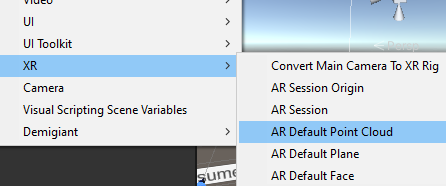
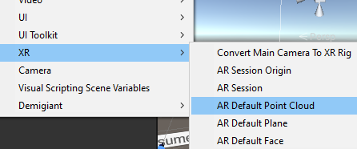
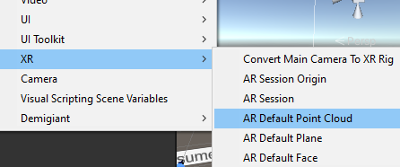

ARCoreSep 16, 2023Using Unity 2021.3.16f1, AR foundation 4.2. The main goal is to learn ARCore. First is to have plane detection and when the user tap on the plane, a cube will appear. I will be following the ar foundation sample from githubI created an empty scene called SampleAR. I deleted the main camera. I right click the hierarchy > XR > AR Session. As described in this documentation "All AR processes, such as motion tracking, environmental understanding, and lighting estimation, happen inside an ARCore session. ARSession is the main entry point to the ARCore API. It manages the AR system state and handles the session lifecycle, allowing the app to create, configure, start, or stop a session. Most importantly, it enables the app to receive frames that allow access to the camera image and device pose" in short an AR Session " Controls the lifecycle of an AR experience"I right click the hierarchy > XR > AR Session Origin. As described in this documentation, an AR session origin "Transforms AR coordinates into Unity world coordinates.". There is an AR camera in AR Session origin - which is why we did not need the default cameraI created 3 buttons where in the onclick referenecs AR Session: Reset, Pause, Resume. Where they call ARSession.Reset,ARSession.enabled(boolean is false) and ARSession.enabled(boolean is true) respectively. Reset clears all detected trackables(Planes and points) and starts a new session. Pause will pause the device tracking and trackable detection - AR Session will not consume CPU resources. Resume a paused ARSession will let the device attempted to relocalize and previously detected objects may shift around as tracking is restablishedOn the AR Session Origin, I added an AR Plane Manager component. As explained here, when a plane is detected, the AR Plane Manager will instantiate a plane prefab. The plane detection can be nothing, everything, horizontal or vertical. I have selected everythingThe plane prefab is created by right clicking in the hierarchy > XR > AR Default plane. This AR Default plane is made into a prefab and then dragged into the Plane Prefab field of the AR Plane Manager component.On the AR Session Origin, I added the AR Point Cloud Manager component. This Uses the XRDepthSubsystem to recognize and track depth data in the physical environment.The point cloud prefab is created by right clicking in the hierarchy > XR > AR Default point cloud. This is made into a prefab and then dragged into the point cloud prefab field of the AR Point Cloud Manager Component

I added the ARRaycastManager component on to the AR Session Origin. Used to raycast against trackablesI created a PlaceOnPlane.cs to be attached to the ARSessionOrigin gameobject. I copied the code from the github example over. Let's analyze what the code this. First is the namespace. I need using UnityEngine.XR.ARFoundation and using UnityEngine.XR.ARSubsystems; So I can reference AR codeIn the Update(), we check if user has touched the screen. If no then we don't need to do anything and return so Update() loop does not continue in this frame. If yes, assign the touchposition and get that touch position back.If there was a touch position, we check what the raycast has hit by calling the Raycast method from ARRaycastManager. The Raycast takes in a Vector2 position,list of ARRaycast hit results, and a trackable type which in this case we choose PlaneWithPolygon We will set the position and orientation to be the 0 index of the list of ARRaycast hit result. This works because ARRaycast hits are sorted by distance so the object we spawn will be placed on the closest distance. If we have not spawned the gameobject yet then spawn it on the closest hit result. Otherwise, change the position of the gameobject to the newly tapped positionBelow is a screenshot of what the plane detection looks likeNext I want to do what the TogglePlaneDetection Sample scene does from the AR Foundation example. In this one, the user presses a button to enable/disable the planes. Analyzing the PlaneDetectionController.cs, I learned two things: (1) I can loop through ARPlaneManager and enable or disable all trackables such as planes by doing
foreach (var plane in m_ARPlaneManager.trackables) plane.gameObject.SetActive(value);where m_ARPlaneManaager is a class member variable of type ARPlaneManager (2) and second is I can check or set if the ARPlaneManager is enabled by calling the enabled property like this m_ARPlaneManager.enabled = !m_ARPlaneManager.enabled;Those code are created in a script called PlaneDetectionController.cs and attached to the AR Session Origin gameobject becuase it contains the ARPlaneManager. I kept the AR Default Point Cloud which has a partical system. You can see in the screenshot below that the planes has been detected but the particle system is still there. Check the youtube playlist to see the result!The AR Default plane has a Mesh Renderer component attached to it, so I can change the material. To make sure that material really does change the mesh,I changed it to a frog material that I have in the projectNext is to do facetracking. Start of simple and have a Red nose! I created a new scene and added AR Session and AR Session Origin to the scene. Since By default the AR Face Manager instantiates the prefab at the origin point which is defined as the Center of a user's head (located inside the skull behind the nose), all I need to do is attach the AR Face Manager component to AR Session Origin. The face prefab I attached is a Red sphere - which I had to lower the scale to 0.05 on all axisI made a bulid but the camera was facing the wrong way and I couldn't change the camera orientation. Turns out on AR Camera Manager component that is attached to the AR Camera gameobject, I had to change facing direction to User.Here's the result!Next step is to press buttonss and change the face prefab on run time. I created a script called ARFacePrefabController.cs and attached it to the AR Session Origin. The logic is when a button is clicked, it will loop through all the faces being tracked and change the prefabI also attached ARFace to the all the face prefabs that will be usedI added an OnClick for all the buttons. Dragged in ARSessionOrigin, linked the FacePrefabOnClickChange() and dragged in the prefab that will be spawnedHowever, when I click the button, the prefab does change, I had to point the camera away from the face and then back to the face for the prefab to spawn. This is NOT what I want! I want the prefab to change immediately when the button is clickedRecent blogsSee all blogs
 I created an empty scene called SampleAR. I deleted the main camera. I right click the hierarchy > XR > AR Session. As described in this documentation "All AR processes, such as motion tracking, environmental understanding, and lighting estimation, happen inside an ARCore session. ARSession is the main entry point to the ARCore API. It manages the AR system state and handles the session lifecycle, allowing the app to create, configure, start, or stop a session. Most importantly, it enables the app to receive frames that allow access to the camera image and device pose" in short an AR Session " Controls the lifecycle of an AR experience"
I right click the hierarchy > XR > AR Session Origin. As described in this documentation, an AR session origin "Transforms AR coordinates into Unity world coordinates.". There is an AR camera in AR Session origin - which is why we did not need the default camera
I created 3 buttons where in the onclick referenecs AR Session: Reset, Pause, Resume. Where they call ARSession.Reset,ARSession.enabled(boolean is false) and ARSession.enabled(boolean is true) respectively. Reset clears all detected trackables(Planes and points) and starts a new session. Pause will pause the device tracking and trackable detection - AR Session will not consume CPU resources. Resume a paused ARSession will let the device attempted to relocalize and previously detected objects may shift around as tracking is restablished
On the AR Session Origin, I added an AR Plane Manager component. As explained here, when a plane is detected, the AR Plane Manager will instantiate a plane prefab. The plane detection can be nothing, everything, horizontal or vertical. I have selected everything
I created an empty scene called SampleAR. I deleted the main camera. I right click the hierarchy > XR > AR Session. As described in this documentation "All AR processes, such as motion tracking, environmental understanding, and lighting estimation, happen inside an ARCore session. ARSession is the main entry point to the ARCore API. It manages the AR system state and handles the session lifecycle, allowing the app to create, configure, start, or stop a session. Most importantly, it enables the app to receive frames that allow access to the camera image and device pose" in short an AR Session " Controls the lifecycle of an AR experience"
I right click the hierarchy > XR > AR Session Origin. As described in this documentation, an AR session origin "Transforms AR coordinates into Unity world coordinates.". There is an AR camera in AR Session origin - which is why we did not need the default camera
I created 3 buttons where in the onclick referenecs AR Session: Reset, Pause, Resume. Where they call ARSession.Reset,ARSession.enabled(boolean is false) and ARSession.enabled(boolean is true) respectively. Reset clears all detected trackables(Planes and points) and starts a new session. Pause will pause the device tracking and trackable detection - AR Session will not consume CPU resources. Resume a paused ARSession will let the device attempted to relocalize and previously detected objects may shift around as tracking is restablished
On the AR Session Origin, I added an AR Plane Manager component. As explained here, when a plane is detected, the AR Plane Manager will instantiate a plane prefab. The plane detection can be nothing, everything, horizontal or vertical. I have selected everything
 The plane prefab is created by right clicking in the hierarchy > XR > AR Default plane. This AR Default plane is made into a prefab and then dragged into the Plane Prefab field of the AR Plane Manager component.
On the AR Session Origin, I added the AR Point Cloud Manager component. This Uses the XRDepthSubsystem to recognize and track depth data in the physical environment.
The plane prefab is created by right clicking in the hierarchy > XR > AR Default plane. This AR Default plane is made into a prefab and then dragged into the Plane Prefab field of the AR Plane Manager component.
On the AR Session Origin, I added the AR Point Cloud Manager component. This Uses the XRDepthSubsystem to recognize and track depth data in the physical environment.
 The point cloud prefab is created by right clicking in the hierarchy > XR > AR Default point cloud. This is made into a prefab and then dragged into the point cloud prefab field of the AR Point Cloud Manager Component

I added the ARRaycastManager component on to the AR Session Origin. Used to raycast against trackables
The point cloud prefab is created by right clicking in the hierarchy > XR > AR Default point cloud. This is made into a prefab and then dragged into the point cloud prefab field of the AR Point Cloud Manager Component

I added the ARRaycastManager component on to the AR Session Origin. Used to raycast against trackables
 I created a PlaceOnPlane.cs to be attached to the ARSessionOrigin gameobject. I copied the code from the github example over. Let's analyze what the code this. First is the namespace. I need
I created a PlaceOnPlane.cs to be attached to the ARSessionOrigin gameobject. I copied the code from the github example over. Let's analyze what the code this. First is the namespace. I need  In the Update(), we check if user has touched the screen. If no then we don't need to do anything and return so Update() loop does not continue in this frame. If yes, assign the touchposition and get that touch position back.
In the Update(), we check if user has touched the screen. If no then we don't need to do anything and return so Update() loop does not continue in this frame. If yes, assign the touchposition and get that touch position back.
 If there was a touch position, we check what the raycast has hit by calling the Raycast method from ARRaycastManager. The Raycast takes in a Vector2 position,list of ARRaycast hit results, and a trackable type which in this case we choose PlaneWithPolygon
If there was a touch position, we check what the raycast has hit by calling the Raycast method from ARRaycastManager. The Raycast takes in a Vector2 position,list of ARRaycast hit results, and a trackable type which in this case we choose PlaneWithPolygon
 We will set the position and orientation to be the 0 index of the list of ARRaycast hit result. This works because ARRaycast hits are sorted by distance so the object we spawn will be placed on the closest distance. If we have not spawned the gameobject yet then spawn it on the closest hit result. Otherwise, change the position of the gameobject to the newly tapped position
We will set the position and orientation to be the 0 index of the list of ARRaycast hit result. This works because ARRaycast hits are sorted by distance so the object we spawn will be placed on the closest distance. If we have not spawned the gameobject yet then spawn it on the closest hit result. Otherwise, change the position of the gameobject to the newly tapped position
 Below is a screenshot of what the plane detection looks like
Below is a screenshot of what the plane detection looks like
 Next I want to do what the TogglePlaneDetection Sample scene does from the AR Foundation example. In this one, the user presses a button to enable/disable the planes. Analyzing the PlaneDetectionController.cs, I learned two things: (1) I can loop through ARPlaneManager and enable or disable all trackables such as planes by doing
Next I want to do what the TogglePlaneDetection Sample scene does from the AR Foundation example. In this one, the user presses a button to enable/disable the planes. Analyzing the PlaneDetectionController.cs, I learned two things: (1) I can loop through ARPlaneManager and enable or disable all trackables such as planes by doing
 Those code are created in a script called PlaneDetectionController.cs and attached to the AR Session Origin gameobject becuase it contains the ARPlaneManager. I kept the AR Default Point Cloud which has a partical system. You can see in the screenshot below that the planes has been detected but the particle system is still there. Check the youtube playlist to see the result!
The AR Default plane has a Mesh Renderer component attached to it, so I can change the material. To make sure that material really does change the mesh,I changed it to a frog material that I have in the project
Those code are created in a script called PlaneDetectionController.cs and attached to the AR Session Origin gameobject becuase it contains the ARPlaneManager. I kept the AR Default Point Cloud which has a partical system. You can see in the screenshot below that the planes has been detected but the particle system is still there. Check the youtube playlist to see the result!
The AR Default plane has a Mesh Renderer component attached to it, so I can change the material. To make sure that material really does change the mesh,I changed it to a frog material that I have in the project
 Next is to do facetracking. Start of simple and have a Red nose! I created a new scene and added AR Session and AR Session Origin to the scene. Since By default the AR Face Manager instantiates the prefab at the origin point which is defined as the Center of a user's head (located inside the skull behind the nose), all I need to do is attach the AR Face Manager component to AR Session Origin. The face prefab I attached is a Red sphere - which I had to lower the scale to 0.05 on all axis
Next is to do facetracking. Start of simple and have a Red nose! I created a new scene and added AR Session and AR Session Origin to the scene. Since By default the AR Face Manager instantiates the prefab at the origin point which is defined as the Center of a user's head (located inside the skull behind the nose), all I need to do is attach the AR Face Manager component to AR Session Origin. The face prefab I attached is a Red sphere - which I had to lower the scale to 0.05 on all axis